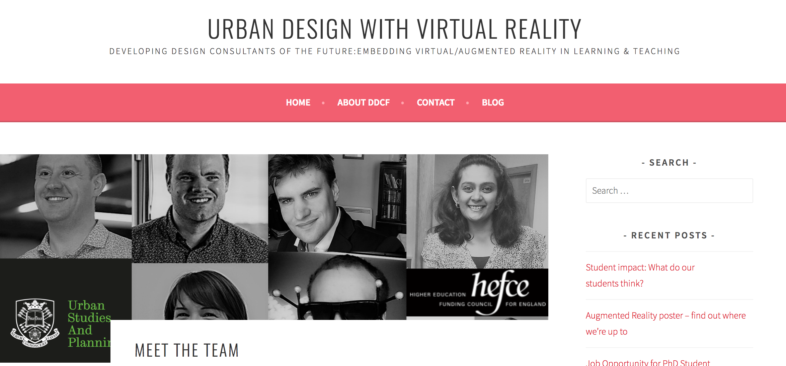

Project Jupyter
Next generation computational and mathematical teaching
Mike Croucher
Co-Founder of Sheffield RSE group http://rse.shef.ac.uk/
Twitter: @walkingrandomly
Research Software Engineer
New role in UK academia since 2012
Focus on software and computing rather than papers
Your computational research
Faster
Easier to use
More reproducible
Citable
Collaborative

Our mission
Enhance The University of Sheffield's capacity to produce high quality, efficient and sustainable research software
....for every academic subject
....in all relevant languages and technologies
Sheffield RSE team

High Performance Computing in Urban Studies teaching
RSE - More Information
- UK RSE Association http://rse.ac.uk/about/the-association/
- Software Sustainability Institutehttps://www.software.ac.uk/
- Research Software Engineers: State of the Nation Report 2017 https://zenodo.org/record/495360#.WhVtmrD81E5
Jupyter and Sheffield
Funded by OpenDreamKit, an EU H2020 Project
Sheffield focus: Teaching and HPC uses of Jupyter
Live Example
Data Science
Dissemination
The traditional paper is just the advertisment
New Interface to traditional tools
Ease of use
Reproducibility
JOOMMF
University of Southampton (and others)
Before JOOMMF
Scripts, TCL, C, grep etc
After JOOMMF
Jupyter in teaching
Jupyter at Sheffield
Many supported by RSE
- Physics
- Computer Science
- Mathematics
- Research Computing
- Biomedical Sciences
Bioinformatics Awareness Days
Luisa Cutillo and RSE
Jupyter course template
Generalisation of BAD Days site
Turns a GitHub repo of notebooks into a course website with cloud computing support.